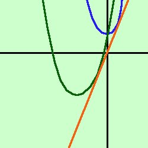

|
Data la parabola y= x2 - kx + 1 determinare il valore di k affinche' essa sia tangente alla retta y = 2x -1 Soluzione: Faccio il sistema fra la retta e l'equazione della parabola y= x2 - kx + 1 Sostituisco il valore della y dalla prima equazione nella seconda ed ottengo 2x = x2 - kx + 1 x2 - kx -2x + 1 posso quindi considerare l'equazione risolvente x2 - (k+2)x + 1 = 0 per avere la tangenza retta-parabola devo porre il delta dell'equazione uguale a zero Ho a = 1 b = -(k+2) c = 1  k2 + 4m + 4 -4 = 0 Se non sei convinto dei segni del quadrato ferma il mouse sul risultato metto in ordine k2 + 4k = 0 E' un'equazione spuria k(k-4) = 0 Un prodotto e' zero se uno dei fattori e' zero, quindi avremo k=0 oppure (k+4)=0 ed abbiamo i due risultati k1 = 0 k2 = -4 Abbiamo quindi due parabole possibili tangenti alla retta data y= x2 - (0)x + 1 y= x2 + 1 y= x2 - (-4)x + 1 y= x2 + 4x + 1 A destra il grfico relativo: le due parabole sono una in blu e l'altra in verde scuro, mentre la retta y=2x e' in rosso |